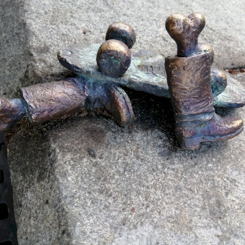
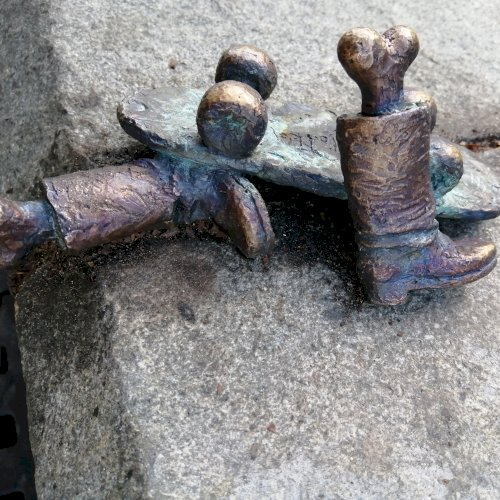

Művészete
Kolodko véleménye szerint azok az idők már elmúltak, hogy egy szobor elkészítését központilag határozzák meg; teret kell engedni a művészek és az emberek érdeklődésének is.
Így született meg például a
2010-ben Ungváron felállított
Lámpagyújtogató szobor is, amely a város szülöttének, Kolja bácsinak alakját örökítette meg.
A köztéri szobrok egy más dimenziója született meg azáltal, hogy rátalált a mostanában olyan sok embert érdeklő
miniszobrok témájára, melyek szerinte:
Ugyanolyan drámai erővel tudnak hatni a szemlélődőkre, mint az óriási alkotások.
Első apró alkotásai
Ungvár utcáin jelentek meg, és eleinte vegyes fogadtatásra találtak; később,
mikor már megszokottá váltak, az emberek megkedvelték őket.
A kis méretű szobrok elkészítése onnan eredt:
Hogy a nagy méretben készülő szobrokat is először kis méretben kell elkészíteni.
A művésznek nem mindig volt tervei megvalósításához
megrendelője, és így anyagi
fedezet híján, hogy ötletei
ne vesszenek el, elkészítette őket
kicsiben.
Kolodko, amikor
Budapestre költözött a családjával, először is a
Főkukac szobrát készítette el, ungvári elődje mintájára. -
A 15 cm-es szobrocska a
Bem rakpart 15. számú ház előtt helyezkedik el a felső rakpart mellvédjén.
Kolodko kedvenc gyermekkori mesefigurája kelt életre a kis szoborban: azt szerette volna,
ha gyermekei is úgy tekintenek rá, mint ő gyermekkorában.
Számára azért is volt fontos ez a mesesorozat, mert nézése közben tanulta meg a magyar nyelvet.
Az apró szobrok hamar népszerűséget szereztek maguknak, olyannyira, hogy némelyiket többször is ellopták ilyen például:
Mekk Elek a (az ezermester) szobornak már a második példánya van kint a téren; viccesen Mekk Elek 2.0-nak hívják a gerillaszoborként elhíresült alkotást.
A gerillaszobrászat kifejezés onnan ered, hogy a szobrok engedély nélkül kerültek ki a közterekre, bár először nem is volt erre szabályzat. -
Néhány művét ellátja saját szignójával is ilyen például:
a Roskovics Ignác szobor, ahol az egész alakos szobor jobb kezében tartott ceruzán található meg a szignó vagy a részeges római legionárius sisaktaréján olvasható a neve. -
 
